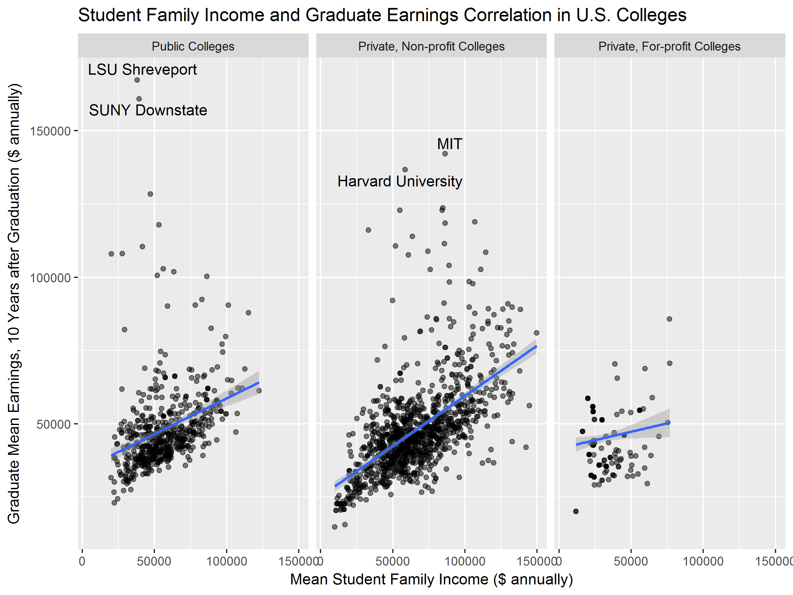

Data Visualizations by Nate Neumann
What a CS and Data Science undergrad
does in their nonexistent free time
Perceptions of Major Difficulty at Dartmouth
The graph, arranged descendingly from the perceived "hardest"
majors, indicates that students find Engineering and Chemistry to be
the hardest majors: and among these majors, as well as
in Physics and Astronomy, the percentage of students in that major that
perceive it as such is more than 25% higher. However, while most
majors are also perceived as a bit more difficult by students
enrolled in them than they are by the general populace, and a few
majors like Native American Studies are considered vastly so,
several actually rank lower among students involved with those
departments: with 3.4% of students suggesting that Neuroscience
is the most difficult, and not a single Neuro major ranking it
as such.
The data for my visualization is courtesy of Dartmouth Pulse, which
collected the data as part of the "Top Five" survey. There were a
bit more than 500 respondents, and the data was kept anonymous. I
have Terren Klein of Pulse to thank for being willing to share the
complete data set with me, upon my inquiry.
Student Family Income and Graduate Earnings
Correlation in U.S. Colleges
A consideration of student wealth backgrounds and
post-graduate earnings. Data courtesy of College Scorecard.

Daily Bitcoin Value and Search Interest Trends Since 2010
The growth of Bitcoin, in price and in public interest. A few
important events are included in the timeline for reference, but I
think it looks much better without. Considered adding some dates/
end-of-day prices for localized peaks, but the events are a bit more
useful, and I like the cleanliness of the label-free chart.